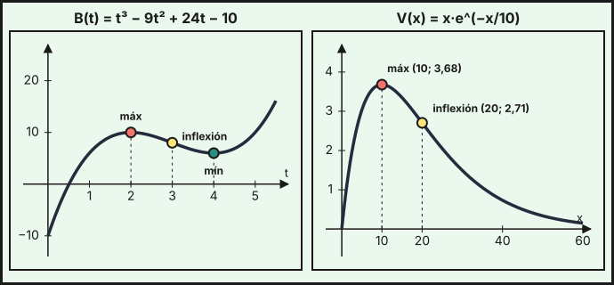
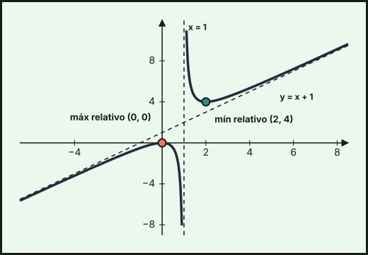
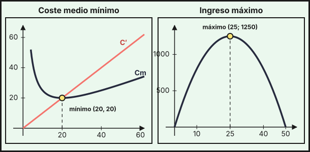

Aplicaciones de la derivada
1. Crecimiento y decrecimiento
El signo de la derivada indica cómo se comporta la función:
- Si \(f'(x)>0\) en un intervalo, \(f\) es creciente en él.
- Si \(f'(x)<0\) en un intervalo, \(f\) es decreciente en él.
Para estudiarlo: (1) se halla el dominio; (2) se calcula \(f'\); (3) se buscan los puntos donde \(f'(x)=0\) o donde \(f\) o \(f'\) no existen; (4) esos puntos dividen el dominio en intervalos, y se mira el signo de \(f'\) en cada uno.
Ejemplo. El beneficio, en miles de euros, de una empresa de reparto \(t\) años después de abrir es \(B(t)=t^3-9t^2+24t-10\). Su derivada es \(B'(t)=3t^2-18t+24=3(t-2)(t-4)\), que se anula en \(t=2\) y \(t=4\):
| Intervalo | \((0,\,2)\) | \((2,\,4)\) | \((4,\,+\infty)\) |
|---|---|---|---|
| Signo de \(B'\) | \(+\) | \(-\) | \(+\) |
| \(B\) | crece | decrece | crece |
El beneficio crece los dos primeros años, baja entre los años 2 y 4 (por ejemplo, por la competencia) y luego se recupera.
2. Extremos relativos
Un máximo relativo es un punto donde \(f\) pasa de crecer a decrecer, y un mínimo relativo, de decrecer a crecer. Si \(f\) es derivable, en ellos \(f'(a)=0\) (la tangente es horizontal). Para clasificar un punto con \(f'(a)=0\):
| Criterio | Máximo en \(a\) | Mínimo en \(a\) |
|---|---|---|
| Signo de \(f'\) (primera derivada) | \(f'\) pasa de \(+\) a \(-\) | \(f'\) pasa de \(-\) a \(+\) |
| Segunda derivada | \(f''(a)<0\) | \(f''(a)>0\) |
Ejemplo. Con \(B''(t)=6t-18\): \(B''(2)=-6<0\), luego hay un máximo relativo en \((2,\,10)\); y \(B''(4)=6>0\), luego un mínimo relativo en \((4,\,6)\).
Extremos absolutos en un intervalo cerrado \([a,\,b]\): el mayor y el menor valor de \(f\) en el intervalo se alcanzan en un extremo relativo o en un extremo del intervalo, así que se comparan los valores en todos ellos. Si el período estudiado es \(t\in[0,\,8]\):
| \(t\) | \(0\) | \(2\) | \(4\) | \(8\) |
|---|---|---|---|---|
| \(B(t)\) | \(-10\) | \(10\) | \(6\) | \(118\) |
El máximo absoluto es \(118\) (miles de euros) en \(t=8\) y el mínimo absoluto, \(-10\), en \(t=0\) (el año de apertura).
Si \(f'(a)=0\) y también \(f''(a)=0\), el criterio de la segunda derivada no decide. Se sigue derivando hasta la primera derivada de orden \(k\) que no se anula en \(a\): si \(k\) es par, hay un extremo (mínimo si \(f^{(k)}(a)>0\), máximo si \(<0\)); si \(k\) es impar, no hay extremo sino un punto de inflexión. Por ejemplo, \(x^4\) tiene un mínimo en \(0\) (\(k=4\)) y \(x^3\) una inflexión en \(0\) (\(k=3\)).
3. Concavidad, convexidad y puntos de inflexión
La segunda derivada indica la curvatura de la gráfica. Siguiendo la notación de la Junta de Andalucía:
- Si \(f''(x)>0\) en un intervalo, \(f\) es convexa (la gráfica tiene forma de \(\cup\): la pendiente aumenta).
- Si \(f''(x)<0\) en un intervalo, \(f\) es cóncava (forma de \(\cap\): la pendiente disminuye).
Un punto de inflexión es un punto donde la función cambia de cóncava a convexa o al revés; en él, \(f''(a)=0\) (cuando \(f''\) existe). Para hallarlos se resuelve \(f''(x)=0\) y se comprueba que \(f''\) cambia de signo.
Ejemplo. \(B''(t)=6(t-3)\) cambia de signo en \(t=3\): \(B\) es cóncava en \((0,\,3)\), convexa en \((3,\,+\infty)\) y tiene un punto de inflexión en \((3,\,8)\). Económicamente, entre los años 2 y 3 el beneficio baja cada vez más deprisa; desde el año 3 la bajada se frena y, tras el mínimo del año 4, el beneficio vuelve a crecer cada vez más deprisa.
Ejemplo (publicidad). Las ventas, en miles de euros, al invertir \(x\) miles en publicidad son \(V(x)=x\,e^{-x/10}\) para \(x\ge0\). Por el tema 6, \(V'(x)=\left(1-\dfrac{x}{10}\right)e^{-x/10}\), que se anula en \(x=10\) y es positiva antes y negativa después. La segunda derivada es \(V''(x)=\dfrac{x-20}{100}\,e^{-x/10}\).
- \(V\) crece en \((0,\,10)\) y decrece en \((10,\,+\infty)\): máximo en \(\left(10,\ \tfrac{10}{e}\right)\approx(10;\ 3{,}68)\).
- \(V''<0\) en \((0,\,20)\) (cóncava) y \(V''>0\) en \((20,\,+\infty)\) (convexa): inflexión en \(\left(20,\ \tfrac{20}{e^2}\right)\approx(20;\ 2{,}71)\).
- Como \(\lim_{x\to\infty}V(x)=0\) (tema 5), la recta \(y=0\) es asíntota horizontal.
Con este modelo, invertir más de 10 000 € en publicidad reduce las ventas.

4. Representación gráfica completa de una función
Para representar \(y=f(x)\) se reúne, en este orden, toda la información:
- Dominio y, si procede, simetrías.
- Cortes con los ejes: \(f(0)\) y las soluciones de \(f(x)=0\).
- Asíntotas: verticales, horizontales y oblicuas (tema 5).
- Monotonía y extremos relativos: signo de \(f'\).
- Curvatura e inflexiones: signo de \(f''\).
- Una tabla con algunos puntos y se dibuja la curva respetando todo lo anterior.
Ejemplo. Representa \(f(x)=\dfrac{x^2}{x-1}\).
- Dominio: \(\mathbb{R}\setminus\{1\}\). Cortes: \(f(0)=0\) y \(f(x)=0\Leftrightarrow x=0\), solo el origen.
- Asíntotas: vertical \(x=1\) (con \(f\to+\infty\) por la derecha y \(-\infty\) por la izquierda). Como \(f(x)=x+1+\dfrac{1}{x-1}\), la recta \(y=x+1\) es asíntota oblicua en \(\pm\infty\).
- Derivada: \(f'(x)=\dfrac{2x(x-1)-x^2}{(x-1)^2}=\dfrac{x(x-2)}{(x-1)^2}\), que se anula en \(x=0\) y \(x=2\).
| Intervalo | \((-\infty,\,0)\) | \((0,\,1)\) | \((1,\,2)\) | \((2,\,+\infty)\) |
|---|---|---|---|---|
| Signo de \(f'\) | \(+\) | \(-\) | \(-\) | \(+\) |
| \(f\) | crece | decrece | decrece | crece |
Hay un máximo relativo en \((0,\,0)\) y un mínimo relativo en \((2,\,4)\).
- Segunda derivada: \(f''(x)=\dfrac{2}{(x-1)^3}\). No se anula nunca, así que no hay inflexiones: \(f\) es cóncava en \((-\infty,\,1)\) y convexa en \((1,\,+\infty)\).

5. Optimización
Un problema de optimización pide el valor de una variable que hace máxima o mínima una magnitud (beneficio, ingreso, coste, área). Pasos:
- Se define la variable \(x\) y se escribe la función a optimizar \(f(x)\) (si aparecen dos variables, se elimina una con la condición del enunciado).
- Se determina el dominio que tiene sentido en el problema.
- Se resuelve \(f'(x)=0\).
- Se comprueba si es máximo o mínimo (con \(f''\) o con el signo de \(f'\)) y, si el dominio es un intervalo cerrado, se comparan también los extremos.
- Se responde al enunciado, con el valor óptimo y sus unidades.
Ejemplo 1 (beneficio máximo). Con un precio de \(p\) euros, el beneficio de un producto es \(B(p)=-4p^2+140p-600\) (miles de euros), como en el tema 4. \(B'(p)=-8p+140=0\Rightarrow p=17{,}5\). Como \(B''(p)=-8<0\) es un máximo, y \(B(17{,}5)=625\): el precio óptimo es 17,50 €, con un beneficio de 625 000 €.
Ejemplo 2 (ingreso máximo). Una compañía de autobuses vende todos los billetes (60 plazas) a 20 € y, por cada euro que sube el precio, pierde 2 viajeros. Con el billete a \(p\) euros viajan \(60-2(p-20)=100-2p\) personas y el ingreso es \(I(p)=p\,(100-2p)=100p-2p^2\). Entonces \(I'(p)=100-4p=0\Rightarrow p=25\), con \(I''=-4<0\) (máximo). A 25 € viajan \(50\) personas y el ingreso es \(I(25)=1250\) €, frente a los \(1200\) € de los 20 €.
Ejemplo 3 (coste medio mínimo). El coste total de producir \(x\) unidades es \(C(x)=0{,}5x^2+200\), así que el coste medio es \(C_m(x)=\dfrac{C(x)}{x}=0{,}5x+\dfrac{200}{x}\) con \(x>0\). \(C_m'(x)=0{,}5-\dfrac{200}{x^2}=0\Rightarrow x^2=400\Rightarrow x=20\). Como \(C_m''(x)=\dfrac{400}{x^3}>0\), es un mínimo, y \(C_m(20)=10+10=20\) €/unidad. Observa que el coste marginal es \(C'(20)=20\): en el mínimo del coste medio coinciden el coste medio y el marginal.

Ejemplo 4 (área máxima). Un huerto comunitario rectangular se cierra con 80 m de valla por tres lados, pues el cuarto es un muro. Si los lados perpendiculares al muro miden \(x\), el lado paralelo mide \(80-2x\) y el área es \(A(x)=x\,(80-2x)=80x-2x^2\) con \(0<x<40\). \(A'(x)=80-4x=0\Rightarrow x=20\), con \(A''=-4<0\) (máximo). Las dimensiones son \(20\times40\) m y el área, 800 m².
- \(f'>0\): creciente; \(f'<0\): decreciente. Extremo relativo: \(f'(a)=0\) con \(f'\) cambiando de signo, o \(f''(a)<0\) (máximo) / \(f''(a)>0\) (mínimo).
- \(f''>0\): convexa; \(f''<0\): cóncava; inflexión: \(f''\) cambia de signo.
- En \([a,\,b]\), los extremos absolutos están entre los extremos relativos y los extremos del intervalo.
- Representación: dominio, cortes, asíntotas, \(f'\), \(f''\), tabla de puntos.
- Optimización: función de una variable, dominio, \(f'=0\), comprobar máximo o mínimo, responder con unidades.